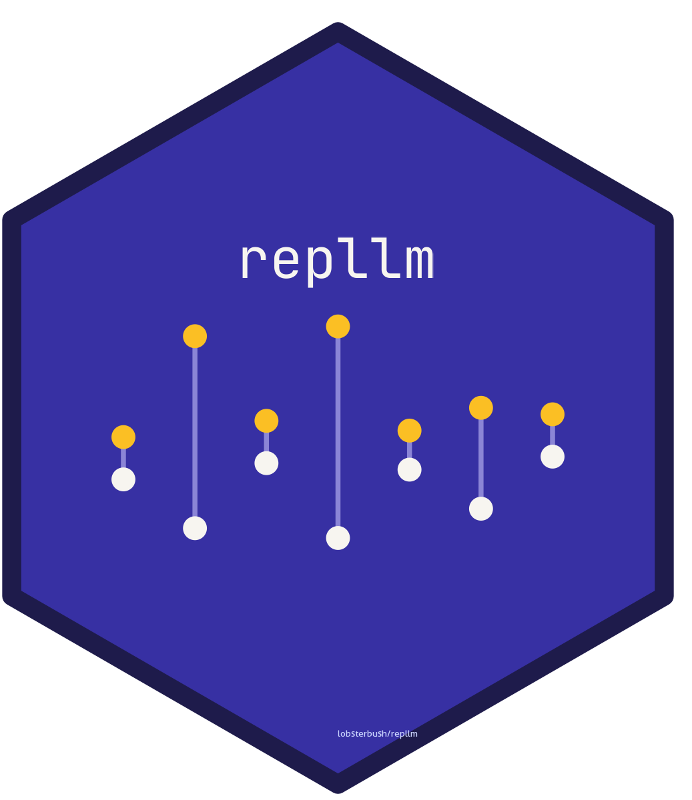

Authors and Citation
Authors
-
Charles Crabtree. Author, maintainer.
Citation
Source: inst/CITATION
Crabtree C (2026). repllm: Generation and Validation of LLM-Written Experimental Materials. R package version 0.4.0, https://github.com/lobsterbush/repllm.
@Manual{,
title = {repllm: Generation and Validation of LLM-Written Experimental Materials},
author = {Charles Crabtree},
year = {2026},
note = {R package version 0.4.0},
url = {https://github.com/lobsterbush/repllm},
}